10.1 멀티 프로세스#
프로세스 구조#
CPython에서 프로세스에 대해 깊게 들어가보자. CPython에서 프로세스는 컴파일된 CPython 인터프리터와 모듈로 구성된다.
즉, CPython에서 프로세스는 인터프리터이다 (프로세스 = 인터프리터)
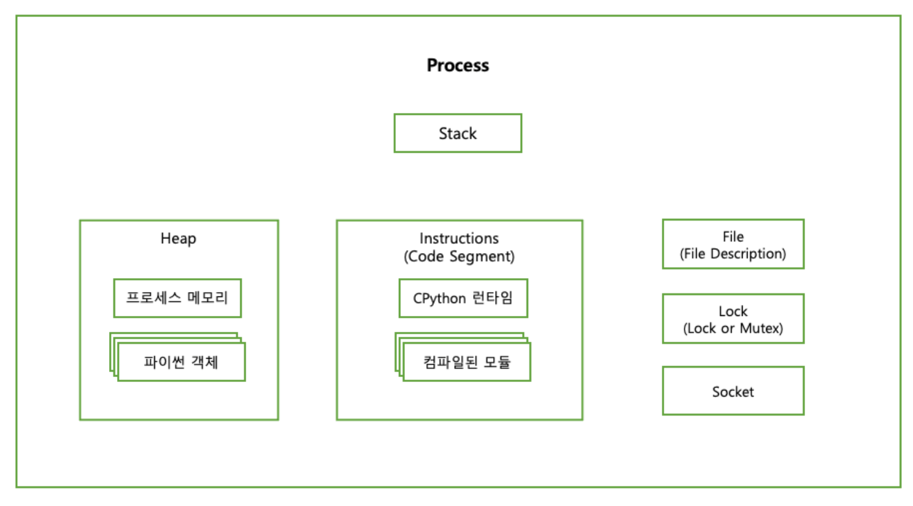
컴포넌트 |
설명 |
|---|---|
스택(Stack) |
함수 호출, 지역 변수 및 제어 정보가 저장되는 메모리 영역 |
힙(Heap) |
동적 메모리 할당에 사용되는 메모리 영역 |
명령(Instructions) |
운영체제가 파일 및 I/O 리소스에 접근하기 위해 사용하는 핸들, 프로세스가 파일을 읽거나 쓰기 위해 운영체제로부터 제공받아 사용 |
잠금(Lock 또는 Mutex) |
다중 쓰레드가 공유 자원에 동시에 접근하는 것을 제어하기 위해 사용되는 동기화 초기 값, Race Condition을 방지하기 위해 하나의 쓰레드만 자원에 접근 가능하도록 만들어줌 |
소켓(Socket) |
네트워크 상 두 컴퓨터 간 통신 끝 점을 의미한다. TCP/IP 또는 UDP 통신과 같은 다양한 유형의 네트워크 통신에 사용 |
위 컴포넌트들은 모두 인터프리터 상태의 구성요소이다.
프로세스는 시작되면 다음과 같은 항목들이 부여된다.
서브루틴 호출을 위한 메모리 스택(Stack)
힙(Heap)
파일이나 잠금(Lock) 또는 소켓(Socket) 접근 권한
그리고 컴퓨터의 CPU는 프로세스를 실행할 때 아래와 같은 추가 데이터가 필요하다.
프로그램 카운터(명령 포인터):
프로그램 시퀸스의 어떤 명령을 실행 중인지 저장
프로그램 레지스터:
실행 중인 명령이나, 명령을 실행하는 데 필요한 데이터를 보관
프로그램 카운터 : 현재 실행 중인 명령의 주소를 저장 프로그램 레지스터 : 현재 실행 중인 명령어와 관련된 데이터를 저장하고 처리
프로그램 레지스터와 프로그램 카운터는 프로세스에 저장된 명령 중 한 명령만 가리킨다. 즉, 한 번에 하나의 명령만 사용 가능하다.
이 방식은 CPython에서 아래와 같은 영향을 미친다.
GIL(Global Interpreter Lock)
한 번에 하나의 쓰레드만 파이썬의 바이트코드로 실행하도록 제한
이는 멀티 쓰레딩 환경에서 동시 실행을 제한함 단, I/O 바운드 작업은 GIL의 영향을 받지 않음 (파일 읽기/쓰기, 네트워크 통신 등…)
멀티코어 활용 부족
멀티코어 환경에서 CPython의 GIL로 인해 효율적으로 코어를 사용하기는 어려움
때문에 파이썬에서 프로세스의 명령을 병렬로 실행하려면 아래의 2가지 방법을 사용할 수 있다.
인터프리터 Fork (POSIX)
새 인터프리터 프로세스 Spawn (POSIX/윈도우)
멀티프로세스를 활용한 병렬 실행#
POSIX 시스템은 Fork API를 기본으로 제공한다. 때문에 어떤 프로세스든 이 API를 통해 자식 프로세스를 Fork 할 수 있다.
Fork 호출이 일어나면 현재 실행 중인 프로세스의 모든 Attribute를 복제해 새 프로세스를 생성한다.
이 때 부모의 힙과 레지스터, 카운터 위치도 새 프로세스로 복제된다. 즉, Fork로 생성한 프로세스는 복제 시점에서 부모 프로세스가 가지고 있는 모든 변수를 읽을 수 있다.
POSIX에 프로세스 Fork 하기#
화씨-섭씨 변환 프로그램을
순차적으로 값을 변환하는 방식에서
fork()를 이용해 자식 프로세스를 spawn하게 바꿔보자.
각 자식 프로세스는 fork 호출 뒤에서부터 실행을 이어나간다.
#include <stdio.h>
#include <stdlib.h>
#include <unistd.h>
static const double five_ninths = 5.0/9.0;
double cesius(double fahrenheit) {
return (fahrenheit - 32) * five_ninths;
}
int main(int argc, char** argv) {
if (argc != 2)
return -1;
int number = atoi(argv[1]);
for (int i = 1; i <= number; i++) {
double f_value = 100 + (i * 10);
pid_t child = fork();
if (child == 0) { // 자식 프로세스에서는 0이다.
double c_value = celsius(f_value);
printf("%f F is %f C (pid %d)\n", f_value, c_value, getpid());
}
}
printf("Spawned %d processes from %d\n", number, getpid());
return 0;
}
위 프로그램을 명령줄에서 실행하면 아래와 같은 결과가 출력된다.
$ ./thread_celsius 4
110.000000 F is 43.333333 C (pid 57179)
120.000000 F is 48.888889 C (pid 57180)
Spawned 4 processes from 57178
130.000000 F is 54.444444 C (pid 57181)
140.000000 F is 60.000000 C (pid 57182)
부모 프로세스(57178)가 자식 프로세스 4개를 spawn했다.
각 자식 프로세스는 child = fork() 이후부터 프로그램 실행을 이어 간다.
이때 child에는 0이 할당된다.
이후 계산을 완료하면 값을 출력한 후 프로세스를 종료한다. 마지막으로 부모 프로세스는 spawn한 프로세스 수와 자신의 PID를 출력한다.
Fork를 활용한 병렬 실행의 큰 단점은 자식 프로세스가 부모 프로세스의 완벽한 복제본이라는 점이다.
CPython의 경우 프로세스를 Fork 하면 2개 이상의 CPython 인터프리터가 실행되는 것과 같고 각 인터프리터가 모듈과 라이브러리를 따로 불러들이면서 상당한 오버헤드가 발생할 수 있다.
때문에 처리 중인 작업의 크기가 프로세스를 Fork할 때의 오버헤드보다 클 때 사용하는 것이 좋다
작업의 크기나 시간이 충분히 커서, 프로세스를 Fork 하는 데 드는 시간 비용보다 작업을 병렬로 처리하는 것이 더 효율적이라 판단될 때
연관된 소스 파일 목록
다음은 멀티프로세싱과 관련된 소스 파일 목록이다.파일 |
목적 |
|---|---|
Lib/multiprocessing |
multiprocessing 패키지의 파이썬 소스 파일 |
Modules/_posixsubprocess.c |
POSIX fork() 시스템 콜을 래핑하는 C 확장 모듈 |
Modules/_winapi.c |
윈도우 커널 API를 제공하는 C 확장 모듈 |
PC/msvcrtmodule.c |
마이크로소프트 비주얼 C 런타임 라이브러리의 파이썬용 인터페이스 |
Spawn과 Fork#
파이썬의 multiprocessing 패키지는 아래의 3가지 병렬 프로세싱 방법을 제공한다.
인터프리터 Fork (POSIX 전용)
새 인터프리터 프로세스 Spawn (POSIX / 윈도우)
fork 서버를 실행한 후에 원하는 수 만큼의 프로세스를 fork (POSIX 전용)
windows/macOS는 Spawn을 기본으로 사용하고 리눅스에서는 Fork를 사용한다.
multiprocessing.set_start_method()를 사용해 변경할 수 있다.
인터프리터 Fork (POSIX)
기존 프로세스를 Fork 하여 새로운 프로세스를 생성 새 프로세스는 복제 시점에서 부모 프로세스와 완전히 동일함
부모 프로세스의 상태를 그대로 복제 → 동일한 인터프리터 상태로 시작
새 인터프리터 프로세스 Spawn (POSIX/윈도우)
새로운 인터프리터 프로세스를 생성하여 독립적인 메모리 공간에서 프로세스를 실행한다. 때문에 부모 프로세스와 독립적인 메모리 공간을 사용한다.
새로운 프로세스를 생성 → 초기화된 인터프리터로 시작
Fork 서버를 실행한 후에 원하는 수 만큼의 프로세스를 Fork (POSIX)
별도의 프로세스를 Fork 서버로 만들어 둔 후, 필요한 만큼의 프로세스를 이 서버를 통해 fork한다.
부모 프로세스가 아닌 별도의 서버 프로세스를 통해 Fork하는 방식이다.
Fork 서버를 통해 프로세스를 생성하기 때문에 메모리 효율성이 높아진다. 또한 여러 프로세스를 빠르게 생성할 수 있다.
import multiprocessing as mp
import os
def to_celsius(f):
c = (f - 32) * (5/9)
pid = os.getpid()
print(f"{f}F is {c}C (pid {pid})")
if __name__ == '__main__':
mp.set_start_method('spawn')
p = mp.Process(target=to_celsius, args=(110,))
p.start()
multiprocessing API는 한 프로세스뿐 아니라 여러 개의 프로세스를 시작하고
프로세스에 데이터를 제공할 수 있는 편리한 방법들을 제공한다.
Pool 클래스도 그 중 하나이다.
아래는 spawn 방식으로 프로세스 4개를 생성하여 계산하는 예제이다.
import multiprocessing as mp
import os
def to_celsius(f):
c = (f - 32) * (5/9)
pid = os.getpid()
print(f"{f}F is {c}C (pid {pid})")
if __name__ == '__main__':
mp.set_start_method('spawn')
with mp.Pool(4) as pool:
pool.map(to_celsius, range(110, 150, 10))
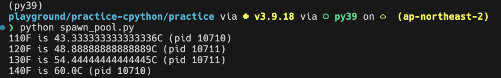
CPython 인터프리터는 상당한 오버헤드가 있기 때문에
Pool 은 각각의 프로세스를 Worker로 사용해서
작업이 완료된 프로세스를 재사용한다.
아래와 같이 Worker가 한 가지 작업만 수행하도록 아래와 같이 제한할 수도 있다.
import multiprocessing as mp
import os
def to_celsius(f):
c = (f - 32) * (5/9)
pid = os.getpid()
print(f"{f}F is {c}C (pid {pid})")
if __name__ == '__main__':
mp.set_start_method('spawn')
with mp.Pool(4, maxtasksperchild=1) as pool:
pool.map(to_celsius, range(110, 150, 10))
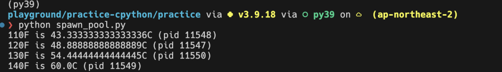
→ 재사용 기준
자식 프로세스의 생성 과정#
import multiprocessing as mp
import os
def to_celsius(f):
c = (f - 32) * (5/9)
pid = os.getpid()
print(f"{f}F is {c}C (pid {pid})")
if __name__ == '__main__':
mp.set_start_method('spawn')
with mp.Pool(4, maxtasksperchild=1) as pool:
# 이 부분이 pickle을 통한 데이터 전송이 이루어지는 부분
pool.map(to_celsius, range(110, 150, 10))
위 예제에서는 부모 프로세스에서 존재하는 데이터를 pool.map 을 통해
자식에게 pickle 형태로 전달한다.
즉, map 메소드 호출 시 자동으로 pickle 을 통한 자식 프로세스로의 데이터 전송이 된다는 것이다.
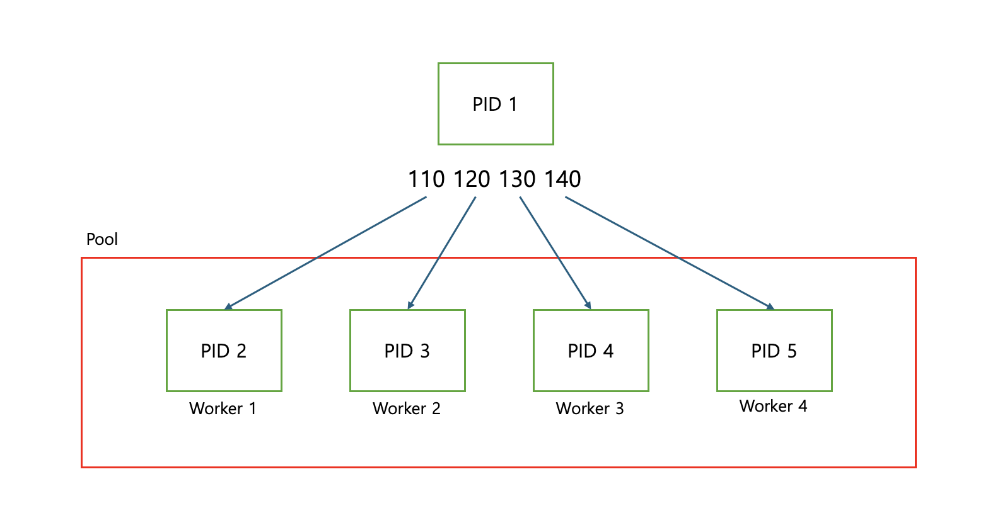
Pipe로 자식 프로세스에 데이터 전송하기#
OS가 자식 프로세스를 생성하면 생성된 프로세스는 부모 프로세스의 초기화 데이터를 먼저 기다린다.
자식 프로세스가 가장 먼저 기다리게 될 초기화 데이터는 아래와 같다.
준비 데이터(Preparation Data) 객체
실행 디렉터리, 시작 방법, 명령줄 인자 등과 같은 부모 프로세스의 정보를 일부 담고 있는 딕셔너리
>>> import multiprocessing.spawn >>> import pprint >>> pprint.pprint(multiprocessing.spawn.get_preparation_data("example")) {'authkey': b'\x1b\x7f\x80\xa8\xc5\x03\xed# \xeb;\xb6\x15~\xae\xd0\xf4\x97:\xb5' b'w\x1a\x02\xce\xb29\xdd\x18\x0bx\xc8\xbe', 'dir': '/Users/wooy0ng/Desktop/playground/practice-cpython/practice', 'log_to_stderr': False, 'name': 'example', 'orig_dir': '/Users/wooy0ng/Desktop/playground/practice-cpython/practice', 'start_method': 'spawn', 'sys_argv': [''],
BaseProcess의 자식 클래스 인스턴스
호출 방식과 운영 체제에 따라 아래의
BaseProcess의 자식 클래스 중 하나를 인스턴스화 한다POSIX:
ForkProcess클래스를 인스턴스화한다.윈도우:
SpawnProcess클래스를 인스턴스화한다.
위 2개의 초기화 데이터는 모두 pickle 로 직렬화되어
부모 프로세스의 파이프 스트림으로 전송된다.
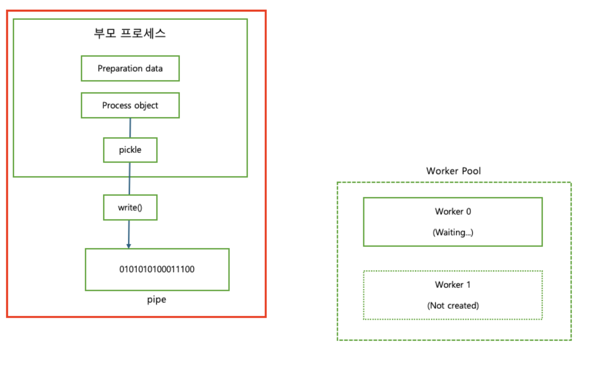
여기까지 정리하자면, 초기화 과정은 다음과 같이 정리할 수 있다.
자식 프로세스를 생성한다. (Spawn 또는 Fork 방식으로)
자식 프로세스는 부모 프로세스로부터 준비 데이터 객체, BaseProcess의 자식 클래스 인스턴스를 받는다.
→ 자식 프로세스는 부모로부터 초기화 데이터를
pickle형태로 Pipe를 통해 전달받는다.초기화된 자식 프로세스는 준비 상태가 되며, 언제든지 부모로부터 작업 인자(함수의 인자)를 받을 준비를 한다.
자식 프로세스 실행하기#
자식 프로세스의 실행은 시작점인 multiprocessing.spawn.spawn_main() 로부터 시작된다.
(인자로 pipe_handle 과 parent_pid(window 일 경우), tracked_fd(posix 일 경우)를 받는다.)
multiprocessing/spawn.py
def spawn_main(pipe_handle, parent_pid=None, tracker_fd=None):
'''
Run code specified by data received over pipe
'''
assert is_forking(sys.argv), "Not forking"
if sys.platform == 'win32':
import msvcrt
import _winapi
if parent_pid is not None:
source_process = _winapi.OpenProcess(
_winapi.SYNCHRONIZE | _winapi.PROCESS_DUP_HANDLE,
False, parent_pid)
else:
source_process = None
new_handle = reduction.duplicate(pipe_handle,
source_process=source_process)
fd = msvcrt.open_osfhandle(new_handle, os.O_RDONLY)
parent_sentinel = source_process
else:
from . import resource_tracker
resource_tracker._resource_tracker._fd = tracker_fd
fd = pipe_handle
parent_sentinel = os.dup(pipe_handle)
exitcode = _main(fd, parent_sentinel)
sys.exit(exitcode) # 반환 값을 프로세스의 종료 코드로 사용하고 인터프리터를 종료
이 함수는 fd, parent_sentinel 를 인자로 넘겨 _main을 호출하고 반환 값을 프로세스의 종료 코드로 사용한 후 인터프리터를 종료하는 함수이다.
_main은 fd 바이트 스트림의 이진 데이터를 역직렬화 하는 함수이다.
fd: 직렬화된 이진 데이터를 읽기 위한 파일 디스크립터
parent_sentinel: 자식 프로세스가 실행되는 도중 부모 프로세스가 종료됐는 지 감시하는 부모 프로세스 감시자 역할, 프로세스 핸들 혹은 파일 디스크립터
두 시스템에서 parent_sentinel 구현이 system platform에 따라 구현이 다른 것을 알 수 있다. 이는 각 시스템의 프로세스를 핸들링 하는 방식이 다르기 때문이다.
이번엔 _main 함수에 대해 자세히 알아보자.
가장 먼저 들어오는 데이터는 준비 데이터를 담고 있는 dict다. 그 다음으로 들어오는 건 SpawnProcess 인스턴스인데 이후 이 인스턴스의 _bootstrap()을 호출한다.
multiprocessing/spawn.py
def _main(fd, parent_sentinel):
with os.fdopen(fd, 'rb', closefd=True) as from_parent:
process.current_process()._inheriting = True
try:
preparation_data = reduction.pickle.load(from_parent)
prepare(preparation_data)
self = reduction.pickle.load(from_parent)
finally:
del process.current_process()._inheriting
return self._bootstrap(parent_sentinel)
_bootstrap()은 역직렬화된 데이터로부터 BaseProcess 인스턴스를 생성하고 마지막으로 BaseProcess.run()으로 실행 대상 함수를 주어진 인자와 함께 호출한다.
def run(self):
'''
Method to be run in sub-process; can be overridden in sub-class
'''
if self._target:
self._target(*self._args, **self._kwargs)
(표준 run() 메소드는 객체의 생성자에 target 인자로 전달된 콜러블 객체를 호출하는데 args 와 kwargs 인자를 각각 위치 인자와 키워드 인자로 사용합니다.)
이후 self._bootstrap()이 반환한 종료 코드가 종료 코드로 설정되고 자식 프로세스는 종료된다.
부모 프로세스는 이러한 과정을 통해 모듈과 실행할 함수를 직렬화하고 자식 프로세스도 이 과정을 통해 전송된 인스턴스를 역직렬화하고 함수를 인자와 함께 호출하고 반환한다.
자식 프로세스가 시작되면 더 이상 이렇게 데이터를 교환할 수 없다. 자식 프로세스가 시작된 이후에는 Queue와 Pipe를 확장한 객체를 이용해 데이터를 교체한다.
프로세스를 풀에서 생성한 경우라면 생성된 첫번째 프로세스는 준비가 완료된 후 대기 상태로 들어가고 부모 프로세스는 이러한 과정을 반복하며 다음 워커에게 데이터를 전송한다.
다음 워커는 데이터를 전달 받은 후 자신의 상태를 초기화하고 실행 대상 함수를 실행한다.
(초기화 후에는 어떤 데이터든 큐와 파이프로만 교환할 수 있다.)
큐와 파이프를 사용해 데이터 교환하기#
지금까지 자식 프로세스를 스폰하는 방법과 파이프를 직렬화 스트림으로 사용하여 자식 프로세스에 실행할 함수와 그 인자를 전달하는 방법에 대해 알아보았다.
프로세스 간 통신에는 작업 특성에 따라 큐와 파이프 두 가지 방법을 사용할 수 있다. 큐와 파이프에 대해 자세히 알아보기 전에 운영체제가 세마포어라는 변수를 사용하여 자원을 적절하지 못한 접근으로부터 보호하는 방법에 대해 알아보자.
세마포어#
다양한 멀티프로세싱 메커니즘들이 자원이 잠겼거나 대기 중이거나 잠기지 않았다는 신호를 보내는 방법으로 세마포어를 사용한다. 운영 체제는 파일과 소켓 등 자원을 잠그기 위한 단순한 가변 타입으로 이진 세마포어를 사용한다.
한 프로세스가 파일이나 네트워크 소켓에 쓰고 있을 때, 다른 프로세스가 같은 파일에 쓰기 시작하면 데이터가 바로 손상된다. 이를 방지하기 위해 세마포어를 사용해 잠근다.
세마포어의 정의와 작동 방식#
P 연산 (acquire 또는 wait): 세마포어의 값을 감소시키는 연산이다. 만약 세마포어의 값이 0이면 (즉, 자원이 모두 사용 중이면), 프로세스는 세마포어가 0보다 커질 때까지 (자원이 해제될 때까지) 대기한다.
p(sem) { while sem=0 do wait; sem--; }
V 연산 (release 또는 signal): 세마포어의 값을 증가시키는 연산이다. 이 연산은 다른 프로세스들이 자원을 사용할 수 있도록 세마포어 값을 증가시킨다.
v(sem) { sem++; if (대기중인 프로세스가 있다면) 대기 중인 첫 번째 프로세스 동작시킴 }
세마포어는 스레드 안정성과 프로세스 안정성을 모두 보장하기 때문에 Cpython은 멀티프로세싱에 세마포어를 사용한다. 동일한 세마포어에 대한 잠재적인 읽기 또는 쓰기 데드락은 운영체제가 처리한다.
이러한 세마포어 API 구현은 C 확장 모듈 Module/_multiprocessing/semaphore.c에서 찾을 수 있다.
이 확장 모듈은 세마포어를 생성, 잠금, 해제할 수 있는 통일된 인터페이스를 제공한다.
운영체제 세마포어 API 호출은 운영 체제에 따라 다른 구현으로 컴파일되는 일련의 매크로를 통해 이루어진다.
윈도우에서는 <winbase.h> API 함수들이 매크로에 사용된다.
#define SEM_CREATE(name, val, max) CreateSemaphore(NULL, val, max, NULL)
#define SEM_CLOSE(sem) (CloseHandle(sem) ? 0 : -1)
#define SEM_GETVALUE(sem, pval) _GetSemaphoreValue(sem, pval)
#define SEM_UNLINK(name) 0
posix에서는 <semaphore.h> API들이 사용된다.
#define SEM_CREATE(name, val, max) sem_open(name, O_CREAT | O_EXCL, 0600, val)
#define SEM_CLOSE(sem) sem_close(sem)
#define SEM_GETVALUE(sem, pval) sem_getvalue(sem, pval)
#define SEM_UNLINK(name) sem_unlink(name)
Queue#
큐는 여러 프로세스 간에 작은 데이터를 주고받기 좋은 방법이다.
이전에도 사용한 멀티프로세싱 예제에 multiprocessing.Manager() 인스턴스와 두 개의 큐를 적용해 보자.
inputs로 화씨 데이터를 입력outputs로 변환된 섭씨 데이터를 출력
두 개의 워커를 사용할 수 있도록 풀 크기를 2로 변경하자.
import multiprocessing as mp
def to_celsius(input: mp.Queue, output: mp.Queue):
f = input.get()
# Time-consuming task ...
c = (f - 32) * (5/9)
output.put(c)
if __name__ == '__main__':
mp.set_start_method('spawn')
pool_manager = mp.Manager()
with mp.Pool(2) as pool:
inputs = pool_manager.Queue()
outputs = pool_manager.Queue()
input_values = list(range(110, 150, 10)) # [110, 120, 130, 140]
for i in input_values:
inputs.put(i)
pool.apply(to_celsius, (inputs, outputs))
for f in input_values:
print(outputs.get(block=False))
실행하면 outputs 큐에서 반환된 튜플의 리스트를 출력한다.
# output
43.333333333333336
48.88888888888889
54.44444444444445
60.0
먼저 부모 프로세스가 inputs 큐에 입력값을 삽입하면 첫 번째 워커가 큐에서 객체를 꺼낸다. .get을 사용해 큐에서 객체를 꺼낼 때 큐 객체는 세마포어 잠금을 사용한다.
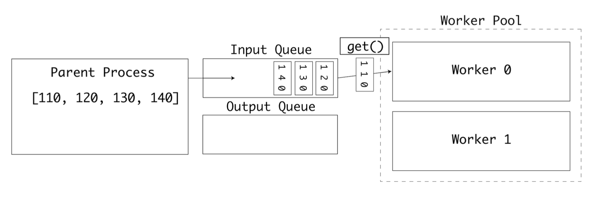
첫번째 워커가 작업 중이라면 두번째 워커가 큐에서 다음 값을 꺼낸다
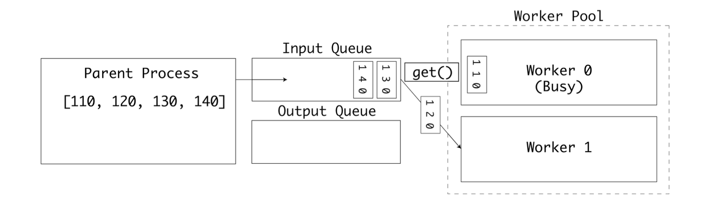
첫번째 워커는 계산을 완료하고 결과를 outputs 큐에 삽입한다.
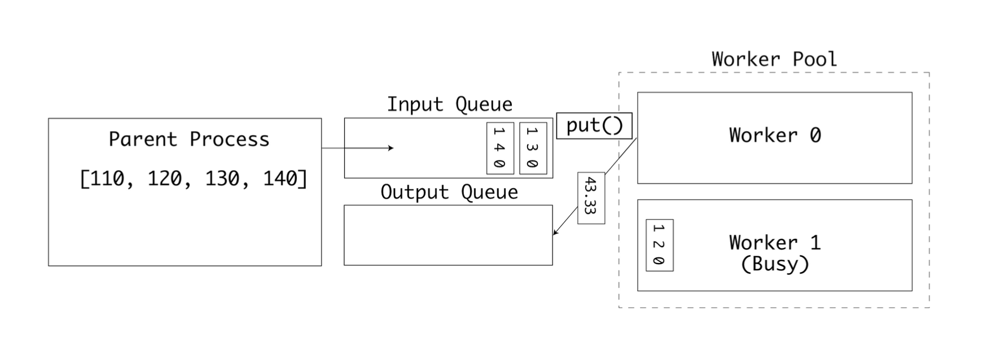
두 큐는 각각 출력과 입력을 위해 사용된다. 최종적으로는 모든 입력값이 처리되고 outputs 큐가 가득채워진다. 이후 부모 프로세스가 결괏값들을 출력한다.
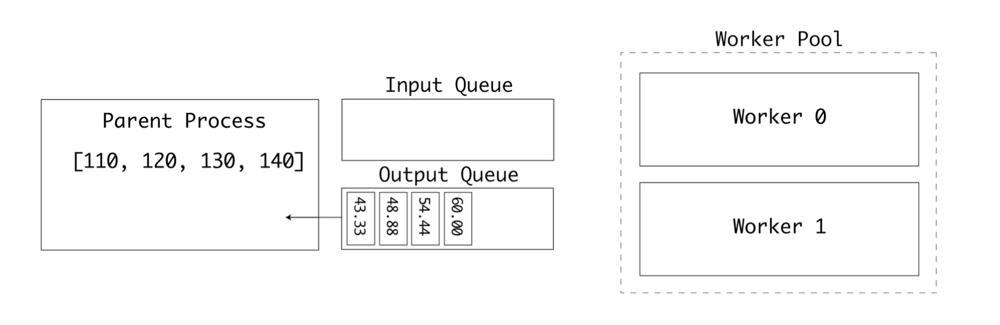
이 예제를 통해 워커 풀이 큐에서 불연속적으로 수신한 작은 값들을 병렬로 처리한 후 그 결과를 호스트 프로세스로 전송하는 방법에 대해 알아보았다.
화씨-섭씨 변환은 사실 병렬 실행에 적합하다고 볼 수 없는 작고 사소한 연산 작업이다. 워커 프로세스가 cpu 집약적인 연산을 수행하는 경우라면 멀티 cpu 또는 멀티코어 컴퓨터에서 큰 성능 향상을 얻을 수 있을 것이다.
파이프#
multiprocessing 패키지는 Pipe 타입을 제공한다. 파이프를 인스턴스화하면 부모 쪽 연결과 자식 쪽 연결, 두 개의 연결이 반환된다. 두 연결 모두 데이터를 보낼 수도, 받을 수도 있다.
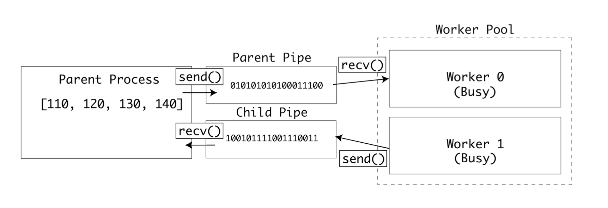
예제에 파이프를 적용하려면 pool.apply()를 pool.apply_async()로 변경해야 한다. 변경하면 다음 프로세스가 논블로킹으로 실행된다.
import multiprocessing as mp
def to_celsius(child_pipe):
f = child_pipe.recv()
# Time-consuming task ...
c = (f - 32) * (5 / 9)
child_pipe.send(c)
if __name__ == '__main__':
mp.set_start_method('spawn')
pool_manager = mp.Manager()
with mp.Pool(2) as pool:
parent_pipe, child_pipe = mp.Pipe()
results = []
for input in range(110, 150, 10):
parent_pipe.send(input)
results.append(pool.apply_async(to_celsius,
args=(child_pipe,)))
print(results)
print("Got {0:.2f}".format(parent_pipe.recv()))
parent_pipe.close()
child_pipe.close()
이 줄에서는 여러 프로세스가 동시에 부모 파이프에서 값을 읽어 버릴 수도 있다.
f = child_pipe.recv()
또한 이 줄에서는 여러 프로세스가 동시에 자식 파이프에 값을 써 버릴 수도 있다.
child_pipe.send(c)
이런 위험상황이 실제로 발생하면 데이터 교환 중에 데이터가 손상될 것이다.
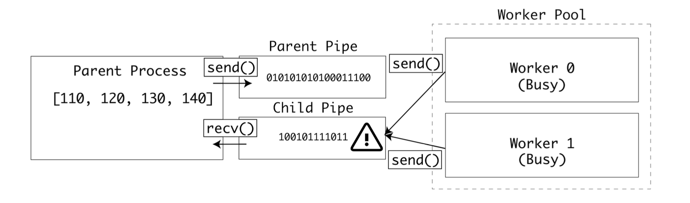
이런 상황을 막기 위해 운영 체제의 세마포어 잠금을 적용하면 모든 자식 프로세스는 똑같은 파이프에 쓰거나 읽을 때 잠금을 확인한다.
잠금이 필요한 부분은 두 곳이다. 하나는 부모 파이프에서 값을 읽는 부분이고 다른 하나는 자식 파이프에 값을 쓰는 부분이다.
import multiprocessing as mp
def to_celsius(child_pipe: mp.Pipe, child_lock: mp.Lock):
child_lock.acquire(blocking=False)
try:
f = child_pipe.recv()
finally:
child_lock.release()
# Time-consuming task ... release lock before processing
c = (f - 32) * (5/9)
# Reacquire lock when done
child_lock.acquire(blocking=False)
try:
child_pipe.send(c)
finally:
child_lock.release()
if __name__ == '__main__':
mp.set_start_method('spawn')
pool_manager = mp.Manager()
with mp.Pool(2) as pool:
parent_pipe, child_pipe = mp.Pipe()
child_lock = pool_manager.Lock()
results = []
for i in range(110, 150, 10):
parent_pipe.send(i)
results.append(pool.apply_async(to_celsius, args=(child_pipe, child_lock)))
for result in results:
print(parent_pipe.recv())
parent_pipe.close()
child_pipe.close()
이제 자식 프로세스는 데이터를 읽기 전과 쓰기 전에 잠금을 기다린다.
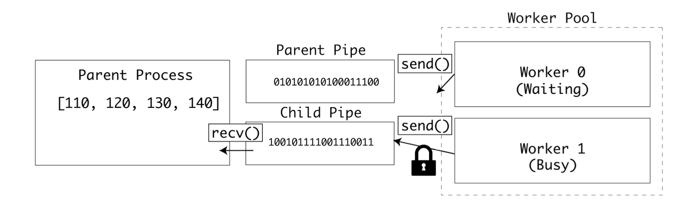
큰 데이터를 전송할수록 충돌 가능성이 높아지기 때문에 이 예제는 큰 데이터를 파이프로 전송하는 상황에 적합하다.
프로세스간 공유 상태#
지금까지는 부모와 자식 프로세스 간에 데이터를 주고받는 방법에 대해 알아봤지만 자식 프로세스끼리 데이터를 주고받아야 하는 경우도 분명 있다. 이런 경우에 multiprocessing 패키지는 두가지 방법을 제공한다.
고성능 공유 메모리 API: 공유 메모리 맵과 공유 C타입을 사용
유연한 서버 프로세스 API: Manager 클래스를 통해 복잡한 타입들을 지원한다.
애플리케이션 예제#
지금부터 이번 장이 끝날 때까지 TCP 포트 스캐너 예제를 리팩터링해가며 다양한 동시성 및 병렬성 기법을 사용해 볼 것이다.
네트워크에서는 호스트는 포트에 연결되며 포트번호는 1부터 65535번 까지 제공된다. 표준적인 서비스에는 표준포트가 제공되는데, 예를들어 HTTP는 80번포트에서 작동하고 HTTPS는 443번에서 실행된다. TCP 포트 스캐너는 네트워크로 패킷을 전송할 수 있는지 확인하는 일반적인 네트워크 테스트 도구이다.
이 코드 예제는 멀티프로세싱 예제에서 사용했던 것과 비슷한 스레드 안전한 큐인 Queue 인터페이스를 사용하고, socket 패키지를 사용해 원격 포트에 1초 타임아웃으로 연결을 시도한다.
check_port()는 host가 주어진 port에서 응답하는 지 확인한다. 응답할 경우 check_port()는 포트번호를 results 큐에 추가한다.
스크립트는 실행되면 80번 포트부터 100번 포트까지 check_port()를 호출하고, 작업이 완료되면 result 큐를 비운 후 결과를 명령줄에 출력한다. 또한 방식별 차이를 확인할 수 있도록 실행에 걸린 시간을 출력한다.
from queue import Queue import socket
import time
timeout = 1.0
def check_port(host: str, port: int, results: Queue):
sock = socket.socket(socket.AF_INET, socket.SOCK_STREAM)
sock.settimeout(timeout)
result = sock.connect_ex((host, port))
if result == 0:
results.put(port)
sock.close()
if __name__ == '__main__':
start = time.time()
host = "localhost" # Replace with a host you own
results = Queue()
for port in range(80, 100):
check_port(host, port, results)
while not results.empty():
print("Port {0} is open".format(results.get()))
print("Completed scan in {0} seconds".format(time.time() - start))
실행해 보면 열려있는 포트와 실행된 시간이 출력된다.
Completed scan in 0.008177042007446289 seconds
멀티 프로세싱을 사용하여 Queue 인터페이스를 multiprocessing.Queue로 바꾸고 풀 실행기로 포트 스캔을 실행하도록 리팩터링해보자.
import multiprocessing as mp
import socket
import time
timeout = 1.0
def check_port(host: str, port: int, results: mp.Queue):
sock = socket.socket(socket.AF_INET, socket.SOCK_STREAM)
sock.settimeout(timeout)
result = sock.connect_ex((host, port))
if result == 0:
results.put(port)
#time.sleep(1)
sock.close()
if __name__ == '__main__':
start = time.time()
processes = []
scan_range = range(80, 100)
host = "localhost"
mp.set_start_method('spawn')
pool_manager = mp.Manager()
with mp.Pool(len(scan_range)) as pool:
outputs = pool_manager.Queue()
for port in scan_range:
processes.append(pool.apply_async(check_port, (host,
port, outputs)))
for process in processes:
process.get()
while not outputs.empty():
print("Port {0} is open.".format(outputs.get()))
print("Completed scan in {0} seconds".format(time.time() -
start))
기대했던 것처럼 여러 포트를 병렬로 테스트해 속도가 빨라진다.
Completed scan in 19.171173786407470703 seconds
멀티프로세싱 요약#
멀티프로세싱은 확장 가능한 파이썬용 병렬 실행 API를 제공한다. 프로세스 간에 데이터를 공유할 수도 있고 CPU 집약적인 작업을 병렬작업으로 쪼개서 멀티 코어 또는 멀티 CPU 컴퓨터의 장점을 활용할 수도 있다.
CPU 집약적인 작업이 아닌 I/O 집약적인 작업의 경우에는 멀티프로세싱이 적합하지 않다.
예를들어 워커 프로세스 4개를 스폰하고 같은 파일을 읽고 쓰는 경우(IO Bound Job), 한 프로세스가 작업하고 있는 동안 나머지 프로세스 3개는 잠금이 해제 되기를 기다려야 한다.
또한 멀티프로세싱은 새로운 파이썬 인터프리터를 시작하는 데 필요한 시간과 처리 오버헤드로 인해 짧은 작업에는 그다지 적합하지 않다.
I/O 작업과 짧은 작업의 시나리오에 대해서는 다음 장에 알아볼 멀티 쓰레딩(thread 모듈) 방법이 적합하다.
(GIL: 한 시점에 단 하나의 스레드만이 파이썬 객체에 접근하도록 허용하는 메커니즘)
(한 스레드가 I/O 작업 중에는 GIL이 해제되고 다른 스레드가 CPU시간을 사용하므로 효율적)
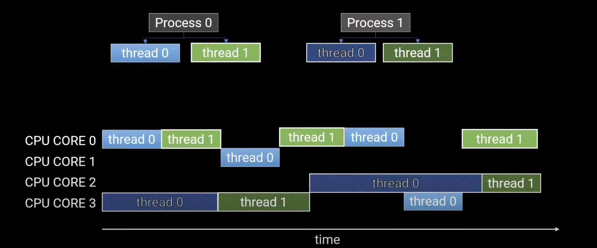